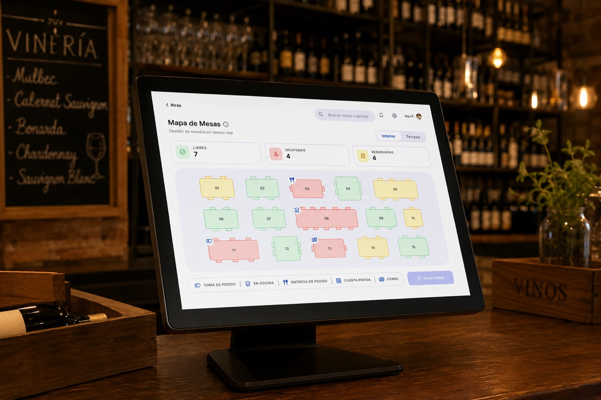
2026
Wino
Sistema de gestión de pedidos en bar
Este proyecto consiste en el diseño de una interfaz digital para la gestión de pedidos en una vinería, considerando las necesidades operativas de los meseros y de cocina, priorizando la claridad de la información, la rapidez de interacción y la reducción de errores.
En esta etapa se realizó un análisis comparativo de otras interfaces para comprender las soluciones existentes, identificar oportunidades de mejora y detectar buenas prácticas aplicables al desarrollo de la propuesta.
-
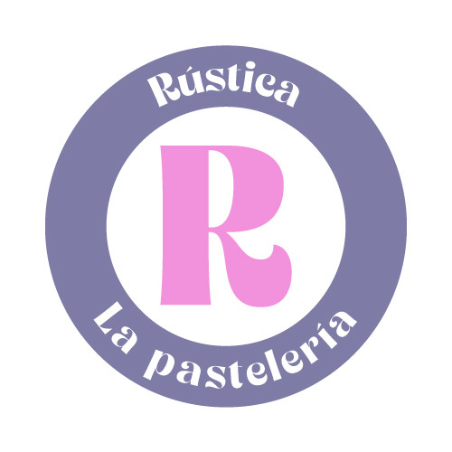
Rústica Pastelería
Cafetería y pastelería dentro de la universidad UADE, ofrece bebidas, snacks, pastelería y sánguches. Tiene servicio para llevar, por lo que no asignan mesas, solo se pide y se retira.
-
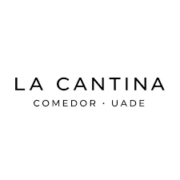
La Cantina
Bar de la universidad UADE, ofrece cafetería, snacks, almuerzos y cenas, pastelería, y más. Tiene servicio para llevar, por lo que no asignan mesas, simplemente se pide y se retira.
-
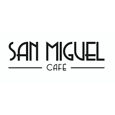
San Miguel
Confitería ubicada en Recoleta, ofrece para desayunar y merendar, además de platos para almorzar y/o cenar. Cuenta con mesas adentro y afuera del local.
Conclusiones
El análisis de los sistemas de pedidos de Rústica Pastelería, La Cantina y San Miguel permite identificar algunos patrones comunes en las interfaces de gestión gastronómica, donde la claridad y la rapidez son clave durante el servicio.
Claridad visual y jerarquía de la información
Una interfaz para meseros debe establecer una organización visual que permita identificar de un vistazo qué acción corresponde a cada momento del servicio.
Vocabulario adaptado al rol del operador
El sistema a diseñar debe priorizar un vocabulario simple, directo y propio del lenguaje gastronómico, de modo que cualquier operador pueda comprender las acciones disponibles sin necesidad de capacitación extensa.
Indicación del estado del proceso
La interfaz a desarrollar debe mostrar en todo momento el estado de cada pedido y del salón en general.
El proceso de pago como referencia positiva.
Este aspecto puede tomarse como referencia positiva, priorizando la simplicidad y la confirmación clara al momento de diseñar el proceso de pago de la nueva interfaz.
Fluidez operativa y cantidad de pasos.
Para un entorno de alta demanda como un bar o restaurante, reducir la fricción en cada interacción y minimizar los pasos necesarios para registrar y cerrar un pedido es una decisión de diseño prioritaria.
Se definió el flujo de navegación para organizar el recorrido del usuario dentro de la interfaz, estableciendo la secuencia de acciones y la relación entre las diferentes pantallas o secciones con el fin de garantizar una experiencia clara y coherente.
Task flow
Los pasos mínimos que hace el usuario para completar cada tarea.
User flow
Todas las decisiones y caminos posibles dentro de la app.
Wireflow
Las pantallas en orden, con el elemento que se toca en cada paso.

Prototipo final de la interfaz en contexto.
Durante el proceso de diseño se evaluó la interfaz aplicando los principios heurísticos de Nielsen, priorizando aquellos más críticos para una interfaz de pedidos.
Análisis heurístico
#1 Visibilidad del estado del sistema
El mapa del salón muestra en todo momento el estado de cada mesa mediante colores diferenciados, y el panel lateral actualiza el resumen del pedido en tiempo real, manteniéndolo informado sobre lo que está sucediendo sin necesidad de navegar.
#2 Correspondencia entre el sistema y el mundo real.
La interfaz utiliza terminología propia del rubro gastronómico como "comanda" y "cuenta", y representa el salón visualmente tal como se vería desde la barra, facilitando una lectura inmediata del entorno.
#3 Control y libertad del usuario
El encargado puede modificar o eliminar ítems del pedido antes de confirmar, y cada pantalla cuenta con un botón de cancelar o volver claramente visible, permitiéndole salir de cualquier estado sin consecuencias.
#4 Consistencia y estándares
Los colores, la ubicación de los botones y la barra superior se mantienen iguales en todas las pantallas, de modo que no necesitan reaprender la lógica del sistema cada vez que cambia de vista.
#5 Prevención de errores
Las mesas ocupadas se diferencian visualmente de las libres para evitar abrirlas por error, y el sistema calcula automáticamente el monto restante en el pago dividido, reduciendo los errores de cálculo manual.
#6 Reconocimiento antes que recuerdo
Los productos se muestran con imagen y nombre, el resumen del pedido permanece visible mientras se seleccionan ítems, y el mapa muestra el estado del salón completo de un vistazo, sin exigirle al usuario que memorice nada.
#7 Flexibilidad y eficiencia de uso
Las acciones más frecuentes como agregar un producto o abrir una mesa requieren un solo toque, y funciones como juntar mesas o dividir la cuenta están disponibles directamente en el flujo principal sin pasos adicionales.
#8 Estética y diseño minimalista
Cada pantalla muestra únicamente la información necesaria para la tarea en curso, con una paleta reducida donde cada color cumple una función específica y sin elementos decorativos que compitan con la operación.
#9 Ayuda a reconocer y recuperarse de errores
Se diseñaron pantallas de error específicas, como la de PIN incorrecto o la de número inválido de comensales, que indican en lenguaje claro qué salió mal y cómo resolverlo. En momentos críticos como el pago por QR, el sistema muestra los pasos del proceso para que el encargado sepa en qué punto está.
#10 Ayuda y documentación
El flujo general de la app es lo suficientemente intuitivo como para que un usuario entrenado pueda operar sin documentación.
Pruebas de usabilidad
Tarea 01: Unificar mesas
¿Lograste unificar ambas mesas para gestionarlas como una única comanda?
¿Cuánto tiempo te tomó aproximadamente encontrar y utilizar la función para unir mesas?
¿Qué tan sencillo te resultó realizar la unificación de mesas dentro del sistema?
Tarea 02: Cargar y gestionar el pedido
¿Lograste registrar correctamente todas las comidas y bebidas y actualizar su estado hasta que fueron servidas?
¿Cuánto tiempo te tomó aproximadamente cargar el pedido completo y gestionar los cambios de estado?
¿Qué tan clara y cómoda te resultó la gestión del pedido dentro del sistema?
Tarea 03: Dividir y cerrar la cuenta
¿Lograste registrar correctamente el pago en efectivo de los productos indicados y dividir el monto restante entre tarjeta y Mercado Pago?
¿Cuánto tiempo te tomó aproximadamente completar el proceso de cobro y cierre de la cuenta?
¿Qué tan sencillo y comprensible te resultó gestionar los pagos y cerrar la cuenta en el sistema?
Los resultados del test mostraron una efectividad del 100% en las tres tareas, ya que todos los usuarios lograron completarlas correctamente. En cuanto a la eficiencia, la mayoría resolvió cada tarea en menos de un minuto. Respecto a la satisfacción, las tareas 1 y 2 fueron las mejor valoradas, mientras que la tarea 3 presentó un poco más de dificultad.
Leyes UX
Ley de Hick
El mapa de mesas organiza visualmente las mesas por color y estado, reduciendo el tiempo de búsqueda: el encargado no tiene que leer texto, sino identificar el color de la mesa que necesita.
La selección de productos está dividida por categorías (comidas, vinos por copa), de modo que el encargado nunca ve toda la carta al mismo tiempo sino una sección a la vez.
Ley de Fitts
Las tarjetas de producto en la selección de comidas y vinos son grandes, con imagen y nombre visible, aptas para uso táctil sin riesgo de error de toque.
El botón de acción principal está siempre ubicado en la parte inferior derecha del panel, zona de fácil acceso con la mano derecha en una tablet horizontal.
El teclado numérico para ingresar el número de comensales usa teclas grandes con buena separación entre ellas, reduciendo errores de toque.
Ley de Jakob
El layout de resumen del pedido + productos sigue el patrón de los sistemas POS más conocidos del mercado, lo que hace que un operador con experiencia previa en sistemas similares se adapte rápidamente.
El teclado numérico para ingresar cantidad de comensales sigue el patrón de teclado telefónico, universal y sin necesidad de aprendizaje.
El flujo de pago con pantalla de confirmación replica el patrón de apps de pago como MercadoPago.
Ley de Miller
El mapa del salón organiza las mesas en grupos visuales por zona, evitando que tengan que procesar las 15 mesas como una lista lineal.
El resumen del pedido en el panel lateral muestra los ítems ya seleccionados de forma persistente, evitando que el encargado tenga que memorizar lo que ya cargó mientras sigue seleccionando productos.
Se detallan los cambios implementados en el prototipo a partir de los resultados obtenidos en el análisis heurístico y los testeos de usabilidad. Las mejoras responden a problemas detectados en la interacción, con el objetivo de optimizar la navegación, facilitar la comprensión del sistema y mejorar la experiencia general.
-
Teclado numérico del PIN
Se cambió el teclado numérico para ingresar el PIN, ya que contenía íconos cuya función podía no ser obvia y, además, no era consistente con el teclado del número de comensales.
Antes 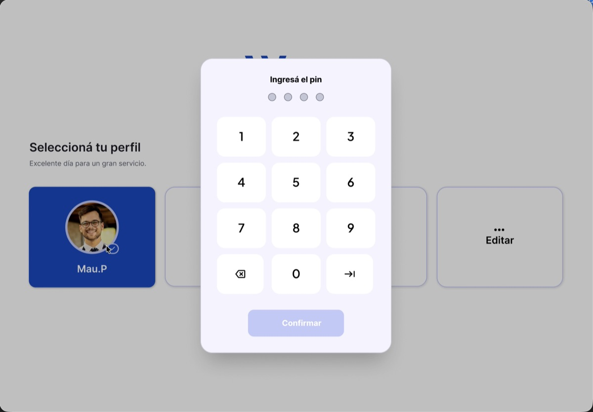
Después 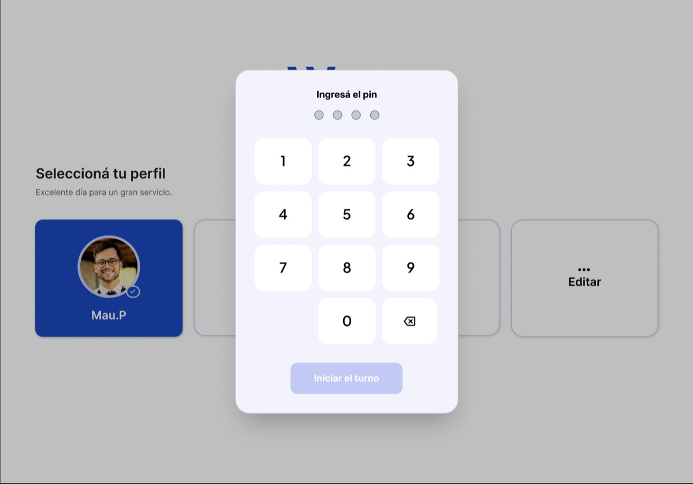
-
Pantalla de error del PIN
Se diseñó una pantalla de error específica para cuando el usuario ingresa un PIN incorrecto.
Antes Después 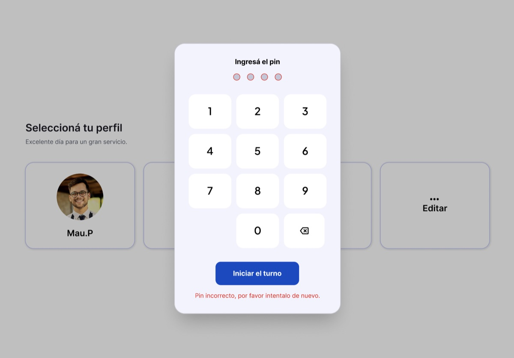
-
Ícono de ayuda
A partir del análisis heurístico, y de los testeos de usabilidad observamos que hacía falta un tooltip en la pantalla de apertura de mesas por lo que agregamos un breve instructivo para esa acción.
Antes 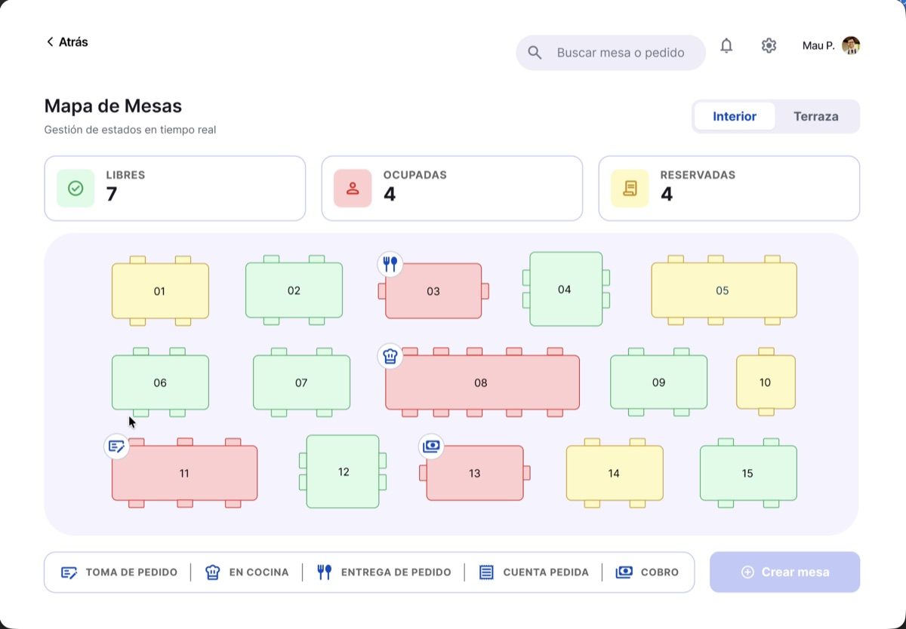
Después 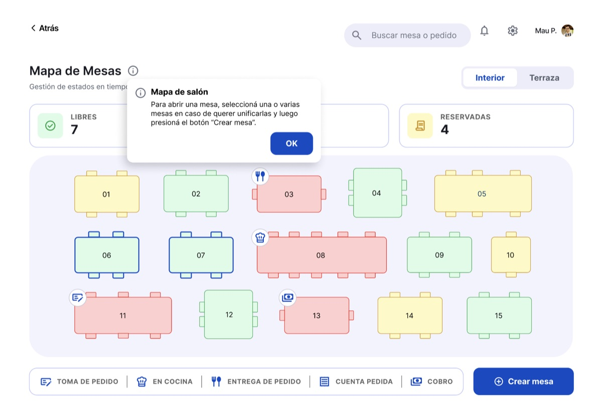
-
Pantalla de error
Se diseñó una pantalla de error específica para cuando el usuario ingresa un número inválido de comensales.
Antes 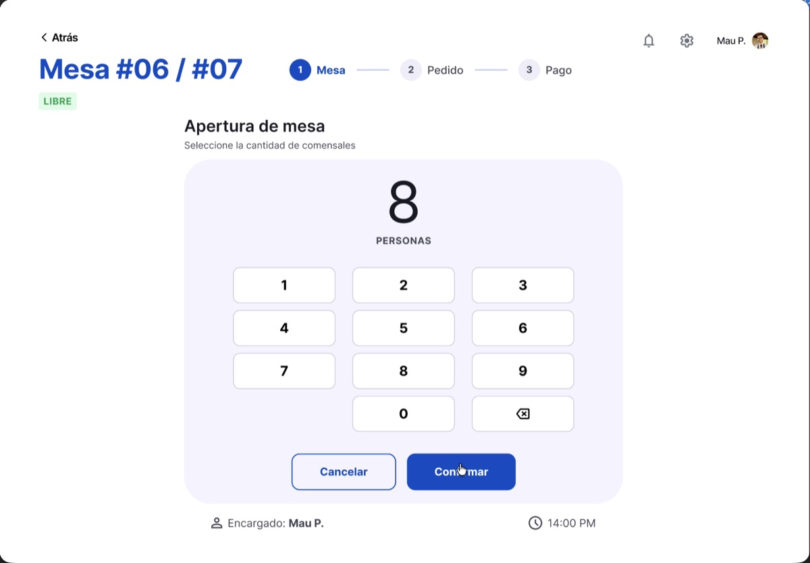
Después 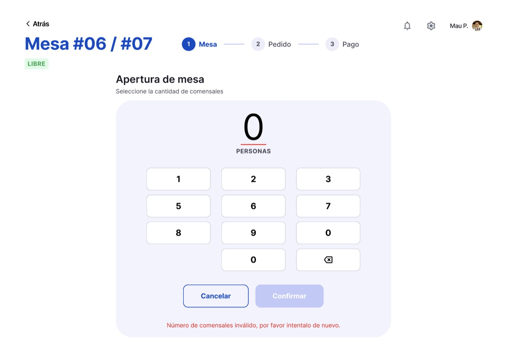
-
Disponibilidad de productos
Se muestra cómo se visualiza un producto cuando no se encuentra disponible, para evitar confusiones al momento de cargar un pedido.
Antes 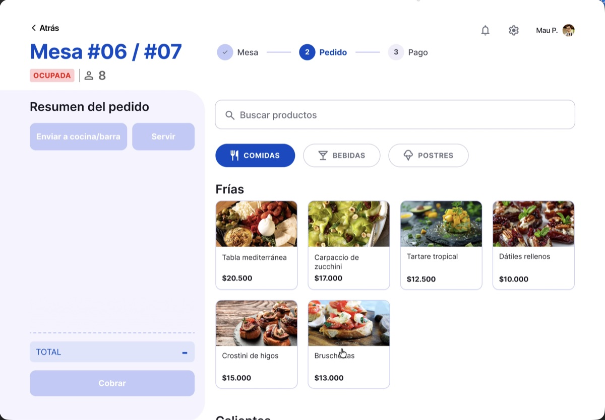
Después 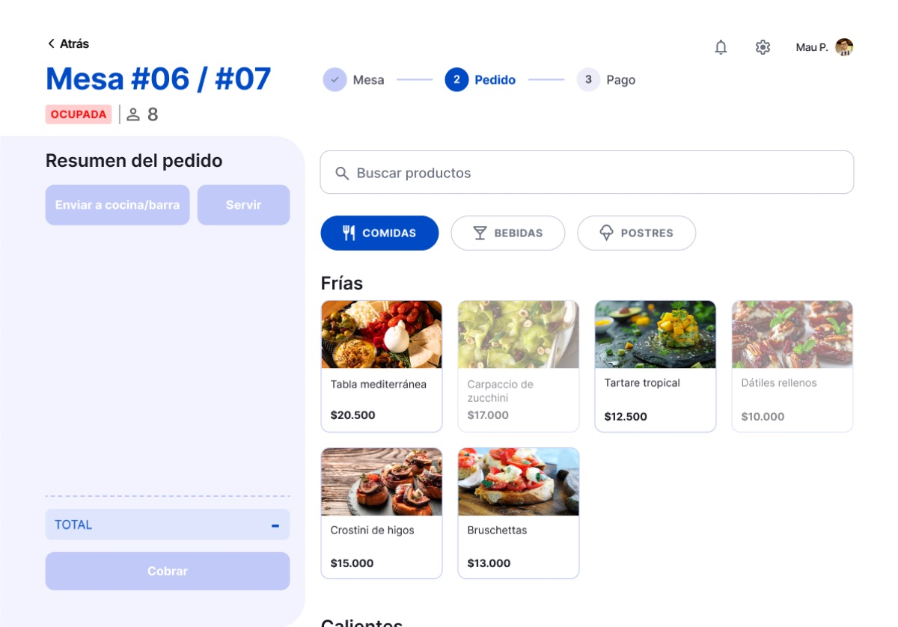
-
Botón
Se reemplazó el botón principal por el botón secundario.
Antes 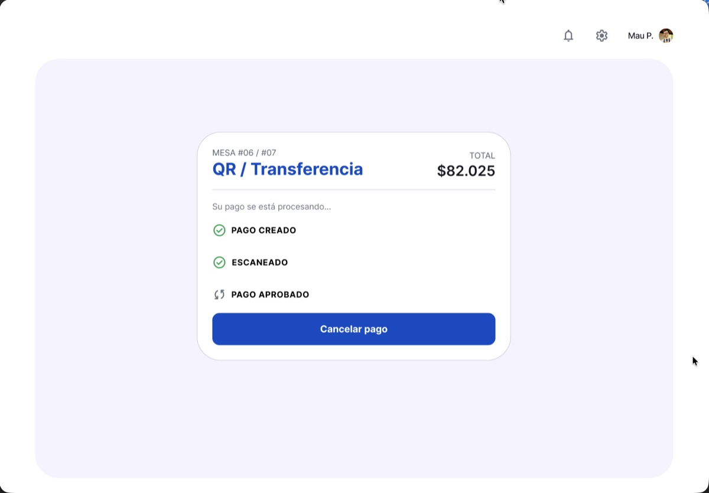
Después 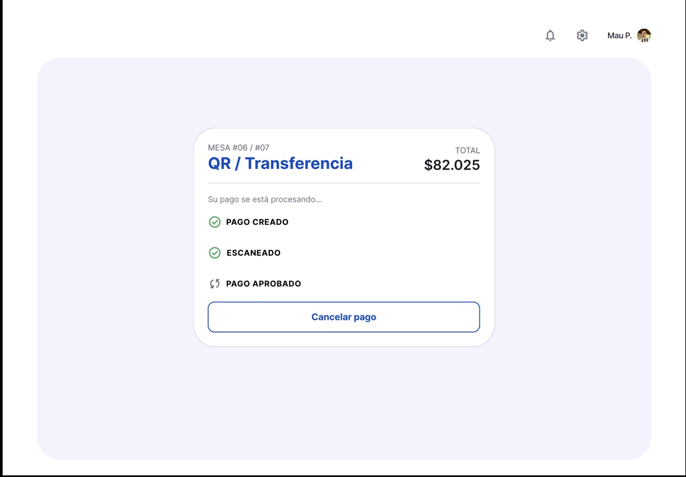
El UI Kit define los elementos visuales y de interacción del sistema para mantener claridad y consistencia durante el servicio. Incluye paleta cromática, tipografía, botones, inputs, etiquetas de estado de pedidos y mesas, cards, modales, indicadores de progreso, íconos e imágenes.
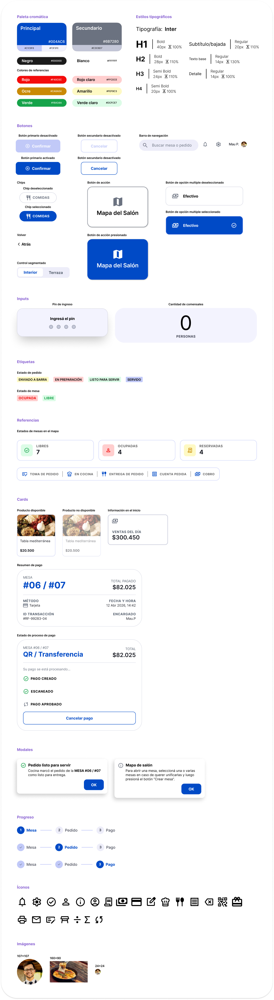